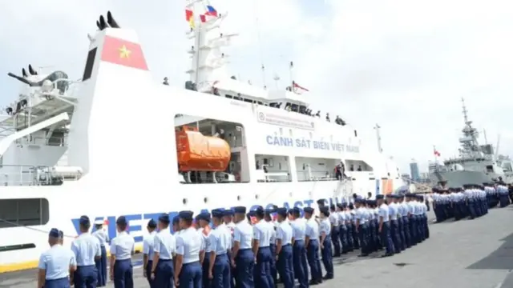
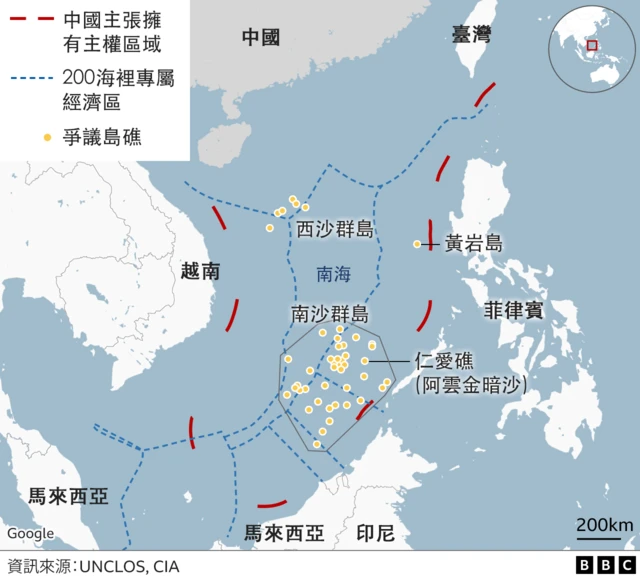
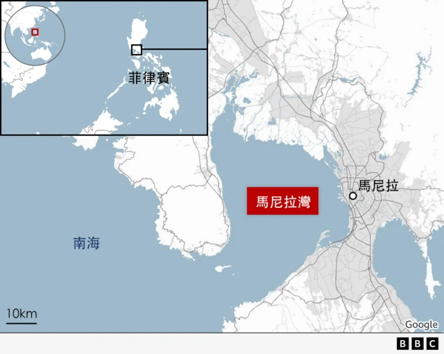

图像加注文字，专家因此分析两国首次的联合演习，除了增进海事合作也有向中国示警的意味存在。
越南和菲律宾将在本周五（8月9日）首次在在马尼拉湾举办联合海岸警卫队演习，引发各界关注。有分析称，这次为期五天的联合演习标志着两国双边关系的重大进展，更是向中国释放信号，表达对北京在邻近南海海域的持续扩张的关切。
菲、越两国间在南海部分海域存在主权争议，也分别与中国在该海域主权划分问题有过对峙，马尼拉更因海域争议与北京剑拔弩张。有专家认为该次演习除了增进海事合作亦意在剑指中国。
防卫学者菲律宾马尼拉德拉萨尔（De La Salle University）大学讲师吉尔（Don McLain Gil）专注国防研究，他对BBC中文解释称，此次合作是两国抵御北京的表态。他说，过去越南和菲律宾都主张对南海（菲律宾称西菲律宾海）部分地区拥有主权，并在争议水域与中国海警发生过冲突，但自从河内表达愿与马尼拉就南海底下大陆架“主张重叠问题”展开对话后，菲、越合作的势头就不断在增长；此次演习凸显两国欲搁置彼此领土争端，联合因应中国的共识。

图像来源，Vietnam Coast Guard
图像加注文字，越南海岸警卫队的这次港口访问，是今年1月菲律宾总统小马科斯访问河内时达成的一项协议之重点。
以越南与印尼在多年谈判后于2022年解决了海上边界争议为例，吉尔分析称， 如果菲律宾和越南能够保持这种谈判态势，两国之间达成协议的可能性是存在的。“这或有望激励其他区域内国家，譬如马来西亚加入，为共同关注中国扩张主义，对共享海域的和平与稳定做出贡献。”他解释。
根据路透社报道，越南海岸警卫队的这次港口访问，是今年1月菲律宾总统小马科斯访问河内时达成的一项协议的重点，包括两国海事部队之间的“战力建设”。
越南胡志明市大学黄心光（Tâm Sáng Huỳnh ）告诉BBC称，尽管在南海的主权议题上有争论，越南仍将菲律宾视为值得信赖和负责任的“中等强国”。
“但这种合作的动力是北京在南海日益增强的自信，（两国）需要共同努力抵制北京在南海的的主权主张。两国联合演习是进一步加强两个中等强国的国防杠杆。”
不过，新加坡尤索夫伊萨东南亚研究院（ISEAS – Yusof Ishak Institute）访问研究员阮清江（Thanh Giang Nguyen）则称，越南并未使用“军事或海军演习”的措辞来描述此一合作，而是将之称为越南人民武装力量“高度重视的行动”，因此，这次演习并非意味着越南高层开始往马尼拉靠拢，并向中国示威。
阮清江告诉BBC中文，在越共总书记阮富仲刚过世不久，刚更换领导人的此刻，河内并未有意将自己卷入与大国的冲突当中，而将继续以“不介入大国博弈”但“战略自主”为基本立场。他分析称，“战略自主权”这个词汇近日反覆出现在越共的官方文件及官媒当中，说明河内希望维护国家利益的同时与“所有”邻国建立友好关系的表态。


“海警船”在南海
此次联合演习将包括越南90米长的船舰 CSB 8002 和马尼拉派出的83米长的离岸巡逻舰 BRP Gabriela Silang，两艘都是海警船； 而且，训练将聚焦于“搜救模拟”和爆炸及火灾预防工作，并未有明显的模拟军事冲突的演训在其中。
而事实上，近年从各国在南海派遣的巡逻及海警船舰的次数及安置人力来看，以海警船掩护下的军事力量扩张已经成为南海角力赛的新态势。
国际关系学者、台湾国防部智库“国家安全研究院”助研究员杨一逵向BBC中文分析称，越南与菲律宾的此次以海警巡逻联合演训（而非军舰演习），明显是针对中国2021年开始实施的新版《海警法》。他说，中国海警隶属于中国武装警察部队，可视为准军事部队，可与中国海军互通，联合行动。
2024年5月，中国排水量达3,100吨的大型海警舰艇编队首次加入解放军“联合利剑—2024A”的军事演习，出现在台湾的东部海域；今年6月中国再宣称其新版《海警法》允许中国海岸警卫队人员扣押那些跨越（北京认定）的海上领土界线的外国公民，当月月底就发生中国海警船与菲律宾船只撞击，人员冲突的事件，引发区域紧张。
杨一逵认为， 现在南海各国开始认识到要强化自身海警力量， 包括船的数量、吨位、装备与人员以及联合区域伙伴进行海上执法与海警巡航的共同操演，才能够抵抗中国海警船的挤压。
“菲律宾与越南首度联合海警防卫演习是近期众多联合海警操演中的一环。”
这也与近期，日本、菲律宾、越南、美国与南韩等联合海警执法演练旨在对中国释放讯号的战略异曲同工。
目前北京没有就此次联训公开发表意见。
但中国解放军南部战区星期三（8月7日）发消息说，军队在南中国海黄岩岛（菲称斯卡伯勒浅滩）附近海空域组织联合战巡。
在南部战区联合战巡同日，美国、菲律宾、澳大利亚和加拿大在菲律宾专属经济区举行联合海上演习。
南部战区强调，一切搅局南中国海、制造热点、破坏地区和平稳定的军事活动，尽在掌握之中。
马尼拉学者吉尔也表示，鉴于中国希望利用东南亚国家间的分歧，最大程度地提高其在该地区的影响力，北京不会对越南及菲律宾此次的合作持正面看法态度。他告诉记者，对马尼拉和河内来说，在两国增强协调的同时，互信十分重要。“需要以最大的努力避免未来双边的摩擦。一旦菲律宾以西这些国家加强彼此的联系和信任，中国就更难实施其分而治之的战略。”
不过，阮清江则分析，过去越南至少与中国海警联合巡逻过8次南海，最近一次是今年4月在北部湾。因此他认为：“从数字来看，越南与中国的演习合作要多于与马菲律宾，因此这次越菲联合演习不该被视为河内开始与北京抗衡的举措。相反，这是河内日益增长的自信的表达，以及越共迄今为止一贯的外交修辞——越南不参与大国博弈，而是努力与所有国家维护地区和平稳定。”
越南担忧中国的反应？
台湾学者杨一逵认为，以当前仅一次的联合海警演练不会造成北京强烈反应，“但这对中国释放出明显的政治讯号。”
他补充说，越南与中国的关系十分微妙，因为中国虽是越南第一大贸易伙伴，但越南对中国的贸易逆差高达390亿美元。因此，越南作为南海主权声索国之一面对北京在西沙群岛（越南称黄沙群岛）上部署军事设施，建飞机跑道等各种强化实际控制的举措，看在眼里，记在心上。
越南胡志明市大学黄心光博士则告诉BBC称，中国可能会对越南和菲律宾之间的联合演习提出批评。但鉴于河内与其邻国之间的关系日益密切，特别是在经济方面，中国的反对可能只是像征性的。“考虑到这一点，河内对与菲律宾等志同道合国家的海上合作更加充满信心。”
图像来源，HOANG DINH NAM/AFP via Getty Images
图像加注文字，习近平（左）在2015年到访越南，与阮富仲会面。